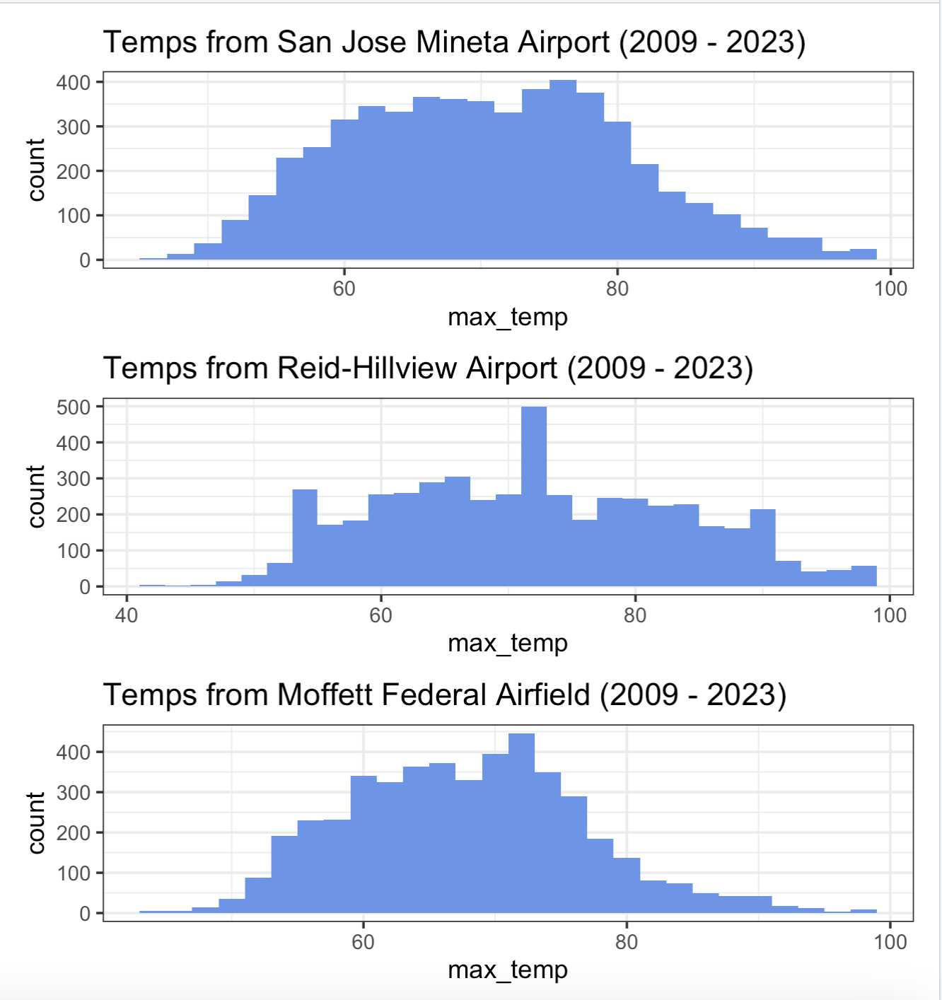

# import temp data
sanjose <- read.csv(here::here('raw_data','sanjose_temp.csv'))
# import census shapefiles of santa clara county
santa_clara_geo_09 <- sf::read_sf(here::here('raw_data','2009','tl_2009_06085_tract00.shp')) %>%
mutate(GEOID = CTIDFP00) %>%
subset(., select = - CTIDFP00)
# Match census tract with 5 year ACS of median income in the years
nine_income <- get_acs(geography = 'tract',
variables = "B19013_001E",
state = "CA",
county = 'Santa Clara',
year = 2009)
# Select GEOID and median income estimate for ACS dataframe
nine_income <- nine_income[c('GEOID','estimate')]Introduction
Every year, around the months of July through to August, I have noticed an uptick in news articles and government advisories cautioning people about the dangers of increasingly frequent heat waves. (Heatwaves can cause health-related problems, like heat strokes, but it can also increase the burden on water, energy, and transportation services - causing blackouts and gridlock that further exacerbate the problem.) WHO - Heatwaves As a Bay Area native, and a burgeoning data scientist, with an interest in environmental justice, I wanted to explore the relationship between temperature, income, and location in the Bay Area. (This blog post is an extension of my final project presentation for grad school, for the course EDS222.)
My starting point was quite ambitious - especially for the time span I had allotted myself for this project. A mere 2 weeks! Gathering and cleaning data, creating code to process it, analyzing and visualizing the results - to look at incomes and temperatures around the entirety of the Bay Area was no small task. Furthermore, due to the inland spread of certain counties, like Alameda, inland, there were areas where there would naturally be higher temperatures that may skew the research. Thus, I decided to zoom in on the city of San Jose, in the South Bay.
Through this investigation, I pose multiple questions to try and get a holistic and introductory understanding of the relationship between temperature and median household income, in San Jose, during the years 2005 - 2009. According to MIT “While climate change afflicts the world on a global scale, a new study from Caltech finds that residents of low-income neighborhoods are bearing the brunt of the hotter temperatures.” Through data analysis, I wanted to observe if these assumptions held up in the specific area I was investigating.
Data Cleaning
Temperature data across the city of San Jose, was retrieved from the National Centers for Environmental Information, National Oceanic and Atmospheric Administration (NOAA). I utilised the climate data online tool, to pull local climatological data from my county of interest - Santa Clara. While there are a total of four stations in the area, the three stations I found the most promising in terms of recorded time range, location, and geographic relevance were the Moffett Federal Airfield, San Jose Mineta National Airport, and the Reid-Hillview Airport.
This was because there were three stations, quite nicely spread out on a diagonal diameter of the city, which allowed me to gather a temperature data I believed to be representative of a cross-section of the city. The time-range for the recorded historical temperatures included the time-range that I wanted to observe, 2009 - 2024.
The relevant temperature data was downloaded from the website, and was saved as three .csv’s to my local drive. After creating a new GitHub repository eds222_final_project, I cloned it to my IDE and uploaded the .csv’s to the data folder (already placed within the .gitignore of the repository.) I created a script that would clean the data available in data_clean.ipynb. In this process, the temperature data I thought most useful was the ‘HourlyDryBulbTemperature’. While there was ‘DailyMaximumDryBulbTemperature’ and ‘DailyMaximumWetBulbTemperature’ variables, it was not as consistent or as complete as the chosen variable. I further processed the .csv data in my R script temp_income_BA.qmd also available on the same GitHub repository. I selected the highest hourly temperature, per day, and was able to approximate the highest daily dry bulb temperature for the years 2009 - 2023 for all three stations.
The geographic shapefiles, for census tracts within Santa Clara County, were pulled from the TIGER/Shapeline files from the US Census Bureau. The shapefiles were uploaded to the data folder raw_data within the .gitignore. I used the census tract data for the years 2009, 2014, 2019, and 2023. This was to match the GEOIDs and areas of the appropriate American Community Survey 5-year data.
Finally, I required median household income data, which I retrieved using the tidycensus package in R. I retrieved the American Community Survey 5-year data for the years 2005 - 2009, 2010 - 2014, 2015 - 2019, and 2019 - 2023.
Data Processing
I will walk through a simplified framework of the code I created, for temperatures measured from the San Jose International Airport, 2009.
- Import temperature, census tract shapefile, and ACS income data.
- Create a point from the station location, matching it to the census tract CRS. Find the census tracts the buffer intersects with.
sanjose_df <- data.table(
place=c("San Jose"),
longitude=c(-121.92795137054253),
latitude=c(37.36852024984821))
sanjose_sf = st_as_sf(sanjose_df, coords = c("longitude", "latitude"),
crs = st_crs(santa_clara_geo_09), agr = "constant")
# use intersect to find census tracts within 2 mile radius of temperature sensing points
sanjose_buffer <- st_buffer(sanjose_sf, 4500)
# Find census tracts that intersect with buffer zones
sanjose_censustract_09 <- st_intersection(sanjose_buffer, santa_clara_geo_09)- Join your appropriate income table to the census tract - to the buffered census tracts. This will find the median income per census tract in the buffered zone around the station. Find the mean of the median incomes for the selected years. (Given the time constraints, I assumed that the income variable would be applicable to a five year time period (e.g. the mean of the 2014 ACS median household income would be applied to the years of 2010 to 2014.))
# Find census tracts that intersect with buffer zones
sanjose_income_09 <- left_join(sanjose_censustract_09, nine_income, by = 'GEOID') %>%
subset(., select = c(place, estimate)) %>%
st_drop_geometry()
sanjose_income_09_mean <- mean(sanjose_income_09$estimate)- Finally, add mean, median incomes to your finished data frame containing station, year, maximum daily temperature, whether the maximum was over 90 degrees Farenheit, and mean, median income. Repeat for all stations over all selected census years - to create the following:
Data Visualization and Analysis
Maximum Daily Temperature Data Distribution
Let’s take an initial look into our temperature data by station, for the years 2009 to 2023.

The above histograms show the frequency distribution of the maximum daily temperature (in degrees Farenheit) for the San Jose Mineta International Airport, Moffett Federal Airfield, and Reid-Hillview Aiport - between the years 2009 and 2023. The distributions seem to be fairly symmetrical and unimodal.
Proportion of Hot Days by Location
Here we we will visualize the proportion of days, by station, that were recorded to be equal to or greater than 90 degrees Farenheit.
We will use a Pearson’s chi-square test, to analyse the whether the frequency of hot days are similar or different in the three locations. Our test fits all the assumptions of a chi-square test: ” … test a hypothesis about one or more categorical variables. …The sample was randomly selected from the population. There are a minimum of five observations expected in each group or combination of groups.” Scribber
Hypothesis
H0: The proportion of days of 90 degrees Celsius or higher, measured at San Jose, Moffett and Reid-Hill from 2009 - 2023, are the same.
HA: The proportion of days of 90 degrees Celsius or higher, measured at San Jose, Moffett and Reid-Hill from 2009 - 2023, are different.
Create Table
Chi-Squred Test Result
Assuming an alpha of 0.05, as the calculated p-value is less, there is strong evidence that we can reject the null hypothesis.
Mean Income and Station Location
Perform a hypothesis test by randomization to investigate whether mean incomes vary by location.
H0: There is no difference between the mean incomes of the reid-hill and moffett census tracts.
HA: There is a difference between the mean incomes of the reid-hill and moffett census tracts.
Use randomization to simulate the distribution of the sample statistic under the null hypothesis.
Under this randomization test, our calculated p-value is 0. As it is lower than our assumed alpha of 0.05, we can assume that there is strong evidence that we can reject the null hypothesis.
Conclusion, Bias, and Limitations
Through this preliminary investigation, we have drawn the conclusion that there is a significant difference in the number of days where the maximum daily temperature are equal to or greater than 90 degrees Fahrenheit, by station - over the years 2009 to 2023. We have also concluded that there is a difference in the means of the median incomes in the census tracts surrounding the temperature sensing stations in a circular zone - with a radius of 4500 m.
Next steps I would like to take, to further explore the relationship between temperature and income in San Jose, would be to create a regression model function that may explain the interaction more directly. However, I would need more robust median income data (e.g. median income date for all years from 2009 to 2023). I would also like to see the temporal relationship between median income and maximum daily temperature, to see if the course of these interactions over the time-period desired.
Limitations I encountered, whilst working on this project, were hard timelines and data availability. Due to the timeline of this project, I narrowed my scope as well as made the decision to not have as a robust dataset as I would have ideally liked - for cenusus tract median income. I would have also preferred to have a couple more locations, that recorded the daily maximum temperature, around the city of San Jose.
These external and internal limitations will have caused bias impacts upon the dataset. As San Jose temperature monitors showed the temperature of a nice cross-section of the city and was documented well, it played a roled into why I chose this location for study. I have also had previous knowledge of the disparities in income, spatially, through the Climate and Economic Justice Screening Tool. Thus, at the very least availability and confirmation bias are present in my analysis.
This project and the subsequent results have definitely increased my interest in the subject and I would like to improve and build upon this framework for future research. I would also like to expand this study, in order to get a better sense of the correlation of median income and maximum daily temperatures in the wider Bay Area. I would also like to investigate whether it’s the chicken or the egg: Do areas with higher incomes tend to have cooler ambient temperatures due to investment in cooling infrastructure and green space urban planning or do more affluent neighborhoods tend to be built in cooler areas? Are there historical redlining impacts that cause low income communities to tend to be in hotter areas of cities/counties? Looking at remotely sensed data, it does appear that there are widespread race and class disparities in urban surface heat temperatures Benz, S. A., & Burney, J. A. (2021) How can we mitigate heat-factors to most effectively help elderly communities, BIPOC, and rural areas?
Data Access
All data required to run the code is placed in the /data and /raw_data folder, in the .gitignore of the repo.
If you would prefer to choose your own locations or personally download the data to your server please refer to the following citations:
NOAA Local Climatological Data: National Centers for Environmental Information (NCEI). (n.d.). Local Climatological Data (LCD) | Data Tools | Climate Data Online (CDO) | National Climatic Data Center (NCDC). Climate Data Online (CDO). https://www.ncei.noaa.gov/cdo-web/datatools/lcd
Census Tract Shapefiles: US Census Bureau. (2024, October 9). TIGER/Line shapefiles. Census.gov. https://www.ncei.noaa.gov/cdo-web/datatools/lcd
Median Income from Tidycensus: Walker K, Herman M (2024). tidycensus: Load US Census Boundary and Attribute Data as ‘tidyverse’ and ‘sf’-Ready Data Frames. R package version 1.6.6, https://www.ncei.noaa.gov/cdo-web/datatools/lcd.
GitHub Repo
Citation
BibTeX citation:
@online{moraes2024,
author = {Moraes, Naomi},
title = {Investigating {Temperature} and {Income} in {San} {Jose}},
date = {2024-12-12},
url = {https://nmoraescommit.github.io/blog/2024-10-18-heat-income-sj},
langid = {en}
}
For attribution, please cite this work as:
Moraes, Naomi. 2024. “Investigating Temperature and Income in San
Jose.” December 12, 2024. https://nmoraescommit.github.io/blog/2024-10-18-heat-income-sj.